Onan, Shimane: things to do, food and stays
Onan · Shimane
Onan
Highlighted on the Shimane map.
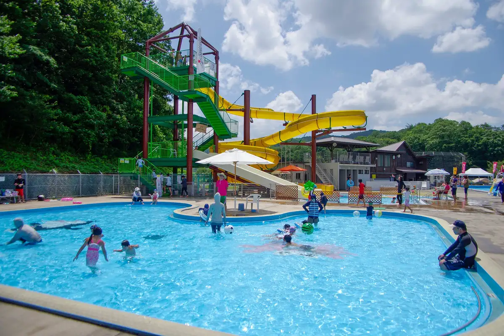
Stay
日貫一日 MARIE
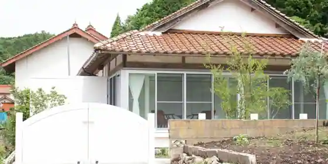
Nichi Kan'Ichi Nichi MARIE
日貫一日 安田邸
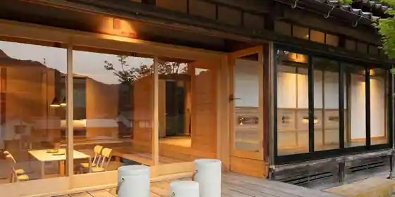
Nichi Kan'Ichi Nichi Yasuda Tei
隠れ家stay蔵HINAWARA
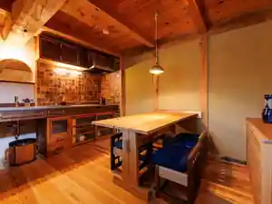
Kakure Ie stay Kura HINAWARA
香木の森公園 バンガロー
Koboku No Mori Koen Bangaro
いこいの村 しまね
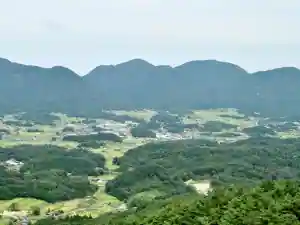
Ikoino Mura Shimane
Inn in Takamizu, Onan with business travelers.
Dining
Milk&Beans Mui
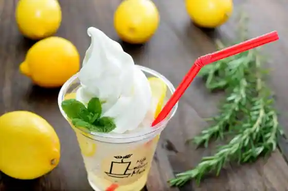
Milk&Beans Mui
里山イタリアンAJIKURA
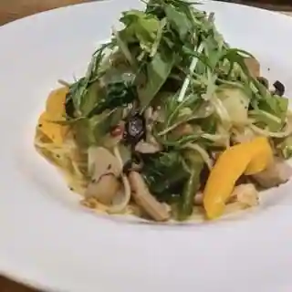
Satoyama Itarian AJIKURA
喫茶 とおりみち
Kissa Torimichi
道の駅 邑南の里
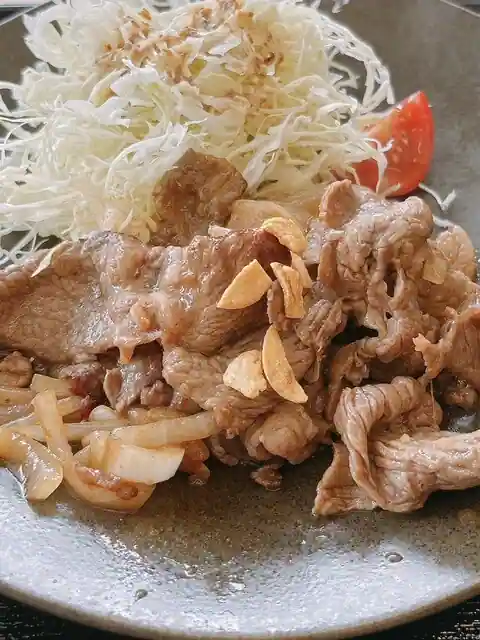
Michi No Eki Onan No Sato
ごはん屋 とち
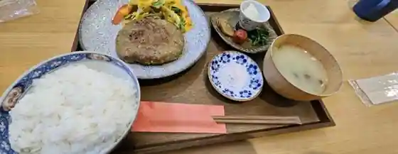
Gohan Ya Tochi
縄文村
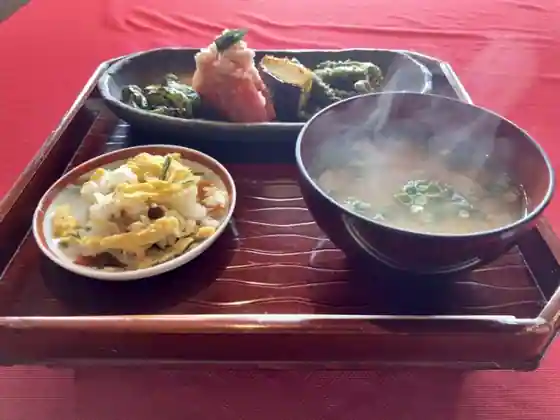
Jomon Mura
駒寿司
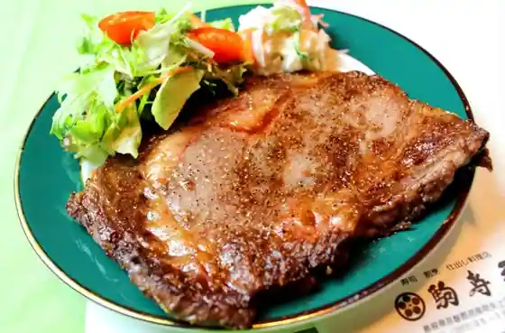
Koma Sushi
有限会社 垣崎醤油店
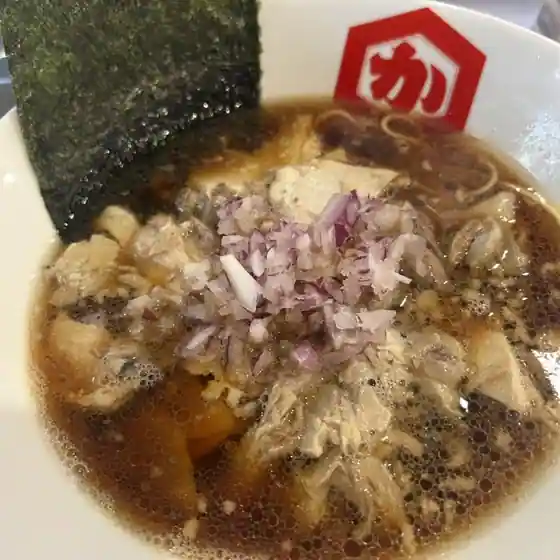
Yugengaisha Kaki Saki Shoyu
パン＆サンドウィッチ ルル
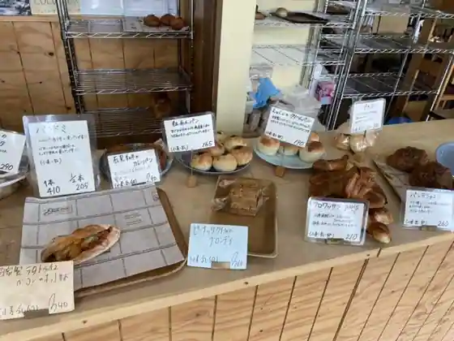
Bakery & Sandouitchi Ruru
まつや
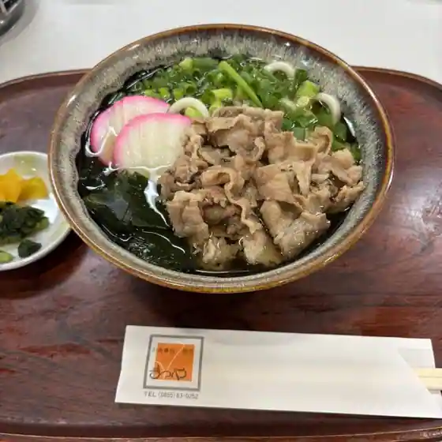
Matsuya
邑南バルTONTONTON
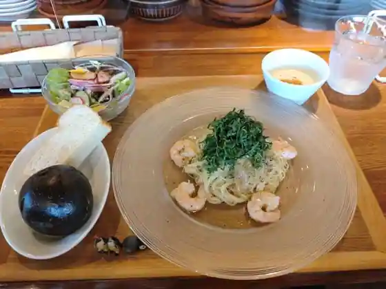
Onan Baru TONTONTON
カフェテリア ビーチ 瑞穂ハイランド
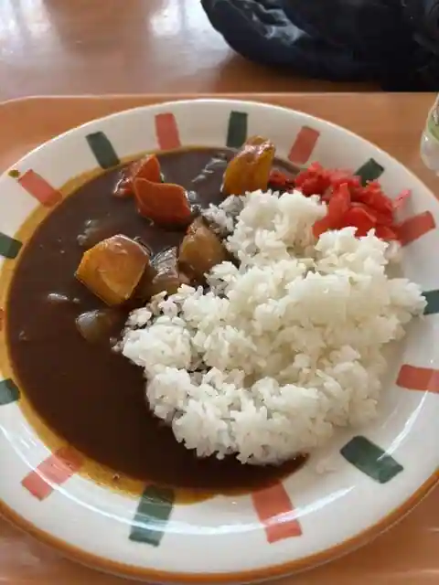
Cafe Teria Bichi Mizuho Hairando
クリーク
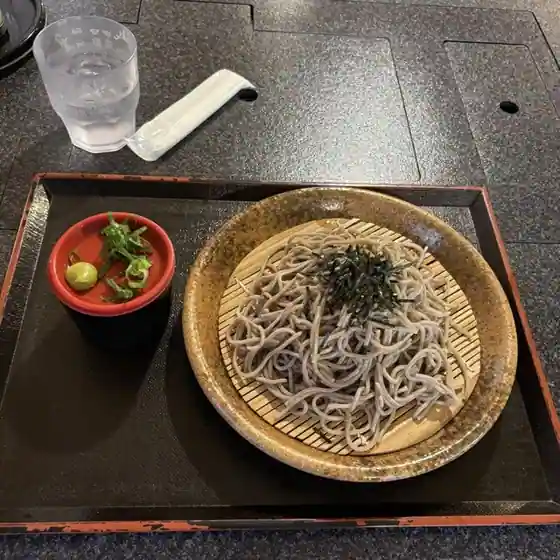
Kuriku
レストラン おちらと
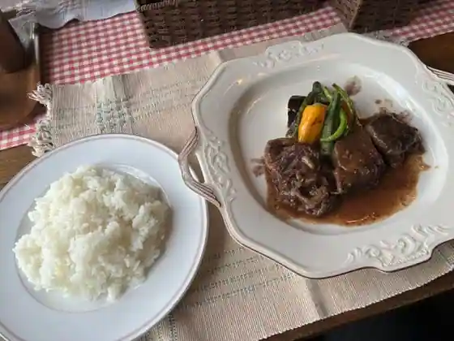
Restaurant Ochirato
邑南そば 空海
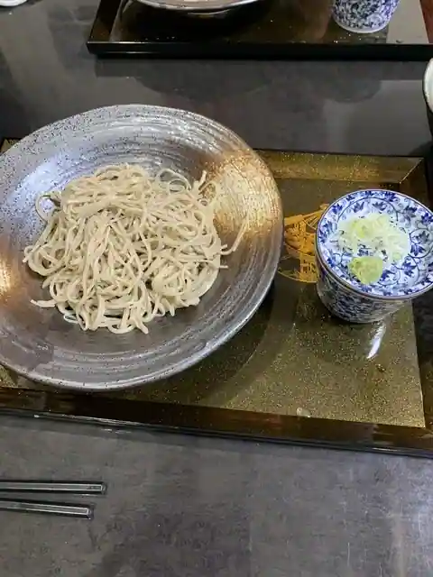
Onan Soba Kukai
気まぐれけーじのそば屋
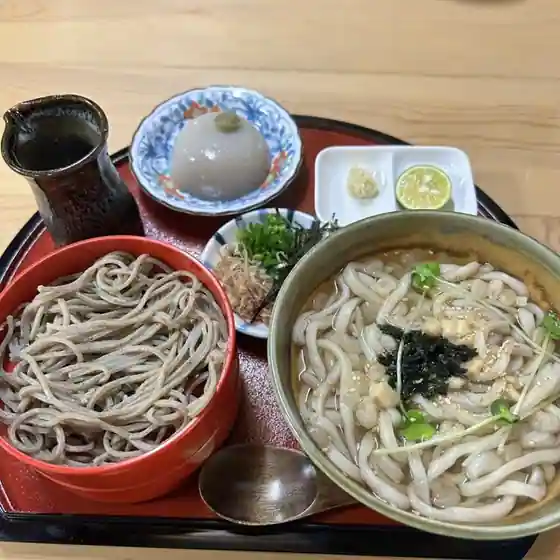
Kimagure Kejinosoba Ya
ケーキとパンのお店 イナダ
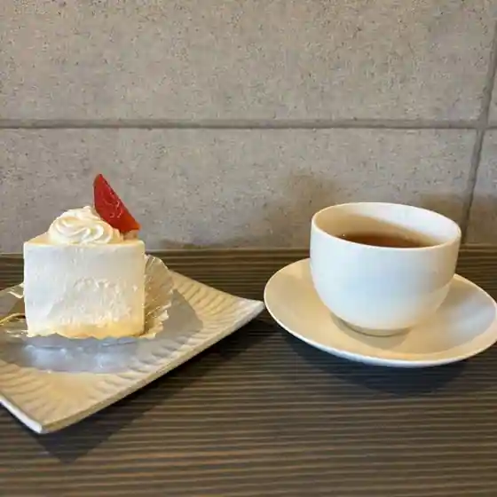
Keki To Bakery No Inada
一久庵
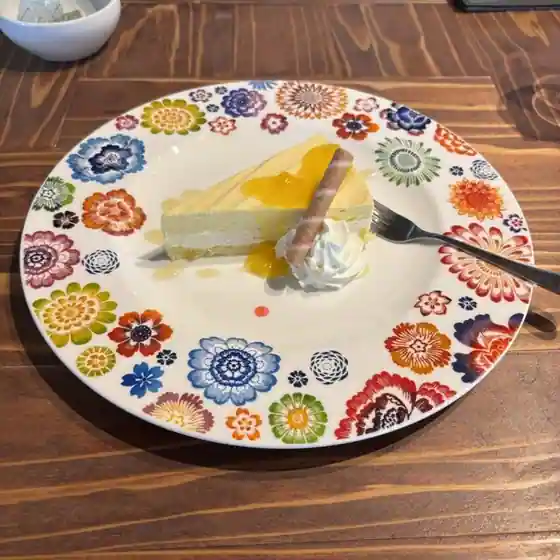
Kazuhisa Iori
お食事処 みうら
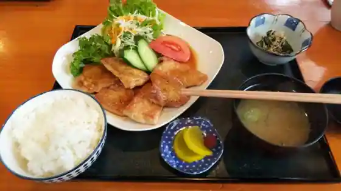
O Shokuji Tokoro Miura
茶と糀 梅田屋
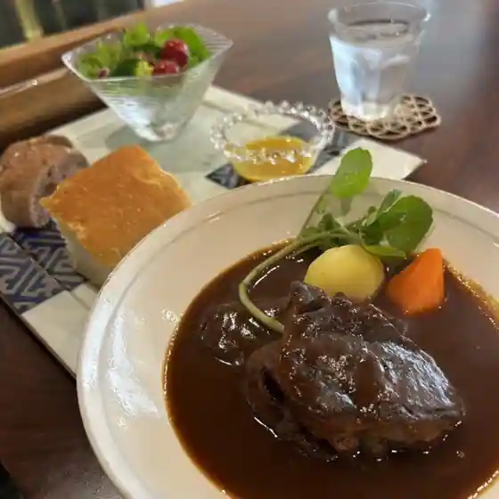
Cha To Koji Umeda Ya
一揖
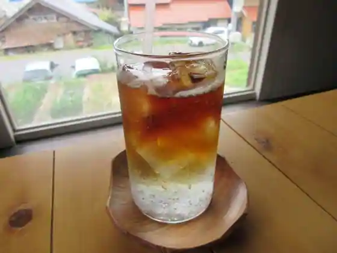
Ichiyu
ボクらの町のカレー屋さん コトコト
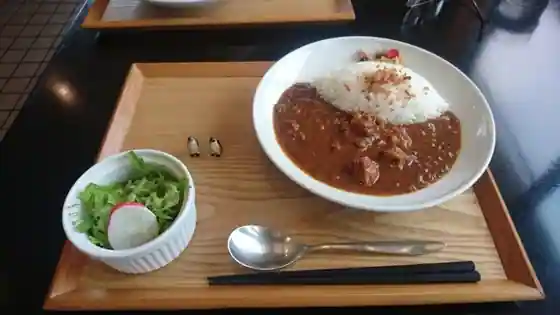
Boku Rano Machi No Kare Ya San Kotokoto
レストラン 香夢里
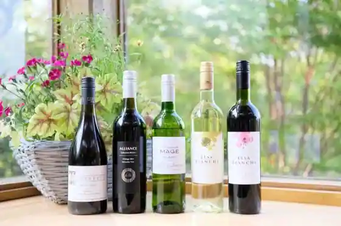
Restaurant Kaori Yume Sato
Sights
Roadside Station Onan Village
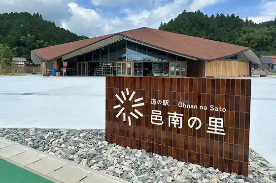
(Tengoku Ni Ichibanchikai Sato) Hanamomo
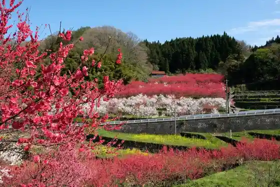
Iwami Onsen Kiri Baths
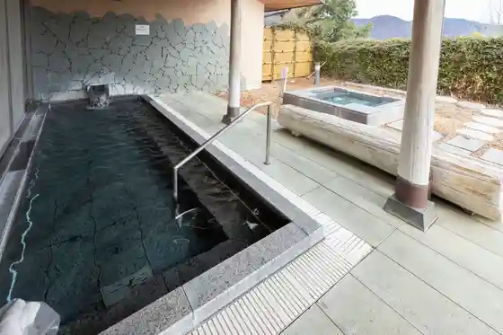
Onan Seishonen Ryoko Village
Kyu Sankosen Utsu I Eki
Dan Sakana Kei
Koboku no Mori Park
Mizuho Hai Land
Milk&Beans Mui Myui
Kuni Shitei Historic Site Kuki Ginzan
Mizuho Hanzagashizen Kan
Shitsu no Iwaya
Cha to Koji Umeda Ya
PAIN&SANDWICH LULU
Tenku no Yado Onan Ikoi no Village Shimane
Kanoko Hara no Mushi Okuri Odori
Gun Hara Campground
Koboku no Mori Park Bangaro
Kaori Yume Sato
Shin Shinokawa Campground
dining POND
Koboku no Mori Park Buruberii Tsumi Tori Experience
Satoyama Itarian AJIKURA
Senjo Kei
Tsugi no Nichi Festival
INAKA Irumi
Onan Baru TONTONTON
Komejirushi
Man Ki Tei
Mizuho Natsu Festival
Kamo Fuku Shuzo
Teuchi Chisoba Sen Tade Iori
Sei Kan Matsuzuki Do
Kissa Torimichi
Yukita Cho Gen Tera no Shidarezakura
Oho Chi Bonchi
Kafe & Beddo Uzui Tsushin Bu
Nichi Kan'ichi Nichi Yasuda Tei
Nichi Kan'ichi Nichi MARIE
Nichi Kan'ichi Nichi Ichiyu
EKINOMAE
Onan Town Hall